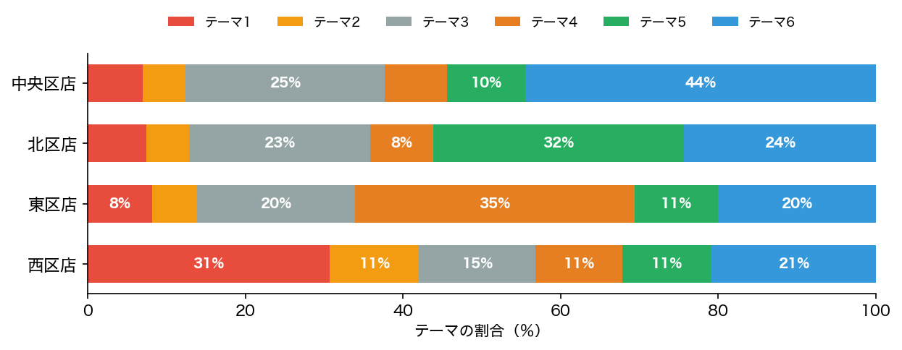

今回AIは 6つのテーマ を見つけました。使った技術は LDA（トピックモデル）という機械学習の方法です。 むずかしい数式はわからなくてOK。結果に「意味」をつけるのは、みなさん（人間）の仕事です。
それぞれのテーマで「よく一緒に買われる商品」です。どんな名前がぴったりか考えて、ワークシート⑦に書いてみよう。
| テーマ | よく一緒に買われる商品 |
|---|---|
| テーマ1 | チョコレート・アイス・キャンディ・ガム・炭酸飲料 |
| テーマ2 | ポテトチップス・キャンディ・アイス・ガム・炭酸飲料 |
| テーマ3 | おにぎり・牛乳・卵・パン・ヨーグルト |
| テーマ4 | カップ麺・冷凍食品・弁当・缶コーヒー・肉まん |
| テーマ5 | 歯ブラシ・洗剤・トイレットペーパー・ティッシュ・シャンプー |
| テーマ6 | サンドイッチ・お茶・コーヒー・ジュース・フルーツ |
同じAIで、4つの支店それぞれが どのテーマをよく買っているか を調べました。 支店によって、強いテーマがちがいます。

同じ分析結果を 生成AI（Gemini） に渡すと、どんな売上アップ施策を提案するでしょう？ 下のプロンプト（指示文）をコピーして Gemini に貼り、出てきた施策を 自分の案（ワークシート⑨）と比べてみよう。 ＝ ワークシート⑩。
コンビニチェーンのマーケティング担当者です。N市にある4つの支店のレシートデータ（1,200件）をAI（トピック分析）で分析したところ、以下の6つの買い物パターンが見つかりました。 テーマ1（主な商品: チョコレート, アイス, キャンディ, ガム, 炭酸飲料） テーマ2（主な商品: ポテトチップス, キャンディ, アイス, ガム, 炭酸飲料） テーマ3（主な商品: おにぎり, 牛乳, 卵, パン, ヨーグルト） テーマ4（主な商品: カップ麺, 冷凍食品, 弁当, 缶コーヒー, 肉まん） テーマ5（主な商品: 歯ブラシ, 洗剤, トイレットペーパー, ティッシュ, シャンプー） テーマ6（主な商品: サンドイッチ, お茶, コーヒー, ジュース, フルーツ） 各支店の特徴： - 中央区店（オフィス街、ビジネスパーソン中心、平日の朝・昼がメイン）：テーマ6が強い - 西区店（住宅街、学校・公園が近く、学生や主婦が中心）：テーマ1が強い - 東区店（工場＋住宅エリア、昼夜問わず多様な人が利用）：テーマ4が強い - 北区店（郊外、駅から遠く車中心、家族連れや高齢者が多い）：テーマ5が強い 各支店の売上を伸ばすための施策を、「商品展開」「プロモーション」「サービス」の3つの観点から、それぞれ1つずつ提案してください。高校生にもわかるように簡潔にお願いします。
※このページの結果は、レシートデータ1,200枚をあらかじめAIで分析したものです（テーマ数＝6）。 分析に使ったのは、第2回でも見た「購入商品」の組み合わせです。